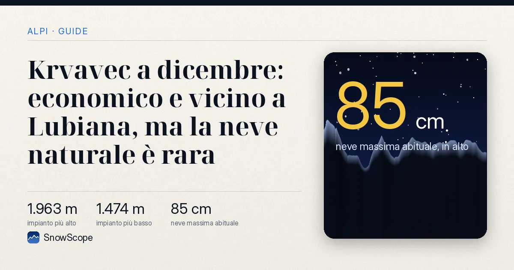

Krvavec a dicembre: economico e vicino a Lubiana, ma la neve naturale è rara
Il Krvavec è la stazione che da Lubiana si raggiunge prima di colazione, e i suoi prezzi sono tra i più bassi di questa serie: 47 EUR il giornaliero adulti, 205 EUR per 6 giorni. La parte difficile è lo storico della neve. In un tipico 15 dicembre la metà montagna (1718 m) ha 13 cm nei nostri 46 inverni, e in 11 di quegli inverni il terreno era scoperto quel giorno.
Le previsioni neve in tempo reale per Krvavec nell'app SnowScopeAltezza neve, allerte powder e mappa 3D, gratis.
Cosa si dice del dicembre qui
L'idea diffusa è che il Krvavec, con impianti fino a 1963 m, sia abbastanza alto per partire presto. Per la Slovenia è alto, e l'area mappata è discreta: 16 km di piste e 13 impianti. Ma la neve che cade non è la neve che resta, e su questo lato sud soleggiato delle Alpi dicembre spesso perde quello che novembre ha portato.


Cosa mostrano davvero 46 inverni
Nella settimana dal 15 al 21 dicembre solo il 24 % dei nostri inverni aveva almeno 30 cm a metà montagna, e il 28 % in vetta. A Natale le quote sono 28 % e 33 %. Il primo giorno abituale con 30 cm a metà montagna è il 7 gennaio.
Peggio, la tendenza è ripida. La media di dicembre a metà montagna è scesa da 15 cm nei primi 15 inverni a 4 cm negli ultimi 15. A Natale il 47 % dei primi inverni aveva lì 30 cm, contro il 13 % dei recenti. L'inverno scorso il 15 dicembre non c'era neve naturale.
La parte economica
Nel listino ufficiale 2026-27 il giornaliero adulti costa 47 EUR e il 6 giorni 205 EUR, con un prezzo in prevendita di 45 EUR al giorno. Molto meno dei ghiacciai austriaci. Se le piste sono preparate, una giornata di dicembre qui è un ottimo affare; lo storico dice solo che in molti inverni la neve naturale da sola non basta a dicembre.
Dove si colloca il Mölltaler Gletscher
Per una settimana di dicembre sicura, l'opzione alta più vicina della nostra lista è il Mölltaler Gletscher in Carinzia: 66 cm all'impianto più basso (2103 m) in un tipico 15 dicembre e il 91 % degli inverni con 30 cm nella settimana dal 15 al 21 dicembre. Costa di più: 332 EUR per 6 giorni in bassa stagione nell'ultimo listino pubblicato (2025-26).
Un piano sensato per chi vive in Slovenia: Krvavec per giornate brevi quando il suo bollettino neve è buono, il ghiacciaio per la settimana programmata.
Le note in piccolo
I nostri numeri descrivono la neve naturale al suolo alle quote della località; non dicono nulla di ciò che la località prepara sulle piste. Prima di comprare uno skipass di dicembre qui, guardate il bollettino neve e piste in tempo reale della località, e considerate una scommessa una prenotazione fatta mesi prima.
Consigli per sciatori
- Controllate il bollettino piste il giorno stesso: la sola neve naturale ha dato 30 cm a metà montagna a metà dicembre solo nel 24 % dei nostri inverni.
- A dicembre comprate giornalieri invece di uno skipass da 6 giorni, a meno che il bollettino mostri un buon fondo.
- Per una settimana fissa prima di Natale salite più in alto: il Mölltaler Gletscher è l'opzione sicura vicina.
- Fuoripista dopo una rara bufera: prima il bollettino valanghe sloveno.
Altre mappe (siti esterni)
Riferimenti e crediti
- Krvavec: official lift-pass prices (2026-27), checked 13 November 2026 rtc-krvavec.si/cenik-urnik
- Mölltaler Gletscher: official lift-pass prices (2025-26), checked 13 November 2026 www.moelltaler-gletscher.at/en/price-list/winter/moelltaler-gletscher
Su questi numeri
Numeri della neve: storico neve SnowScope, 46 inverni passati (1980-81 - 2025-26) alle quote della località, corretto per la quota (una stima per un'area, non i bollettini della località); "buona neve" = 30 cm o più al suolo in media nella settimana. Mappa: la nostra altezza abituale al 15 dicembre distribuita sul terreno secondo la quota. Piste e impianti: mappatura OpenSkiMap. Skipass: listini ufficiali delle località, verificati il 13 novembre 2026; i prezzi possono cambiare.
Bollettini valanghe ufficiali: ARSO – Slovenian Environment Agency
Cita questo articolo
Per ricerca, didattica o stampa: numeri e grafici sono liberamente riutilizzabili con licenza CC BY 4.0 citando così.
SnowScope (2026), Krvavec a dicembre: economico e vicino a Lubiana, ma la neve naturale è rara, https://snowscope.app/blog/it/2026/11/krvavec-december-skiing-ljubljana-honest-snow.html, consultato il 2026-11-14
SnowScope (Atlas Labs). (2026, November 14). Krvavec a dicembre: economico e vicino a Lubiana, ma la neve naturale è rara. SnowScope snow reports. https://snowscope.app/blog/it/2026/11/krvavec-december-skiing-ljubljana-honest-snow.html
BibTeX
@misc{snowscope2026krvavecdecemberskiinglju,
author = {{SnowScope (Atlas Labs)}},
title = {Krvavec a dicembre: economico e vicino a Lubiana, ma la neve naturale è rara},
year = {2026},
month = nov,
howpublished = {\url{https://snowscope.app/blog/it/2026/11/krvavec-december-skiing-ljubljana-honest-snow.html}},
note = {Published 2026-11-14 20:54 UTC; accessed 2026-11-14}
}· CC BY 4.0 · Metodi, dati e strumenti →
Krvavec: neve e temperatura per quota, quest'inverno vs lo scorso (strumenti) →
Segui Krvavec
Gratis: un messaggio quando arriva la neve e il meteo ogni mattina.